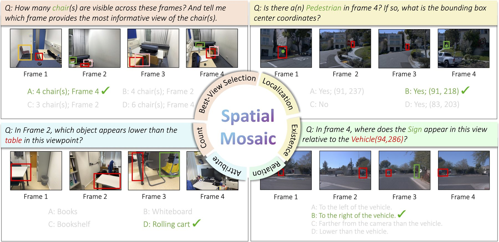
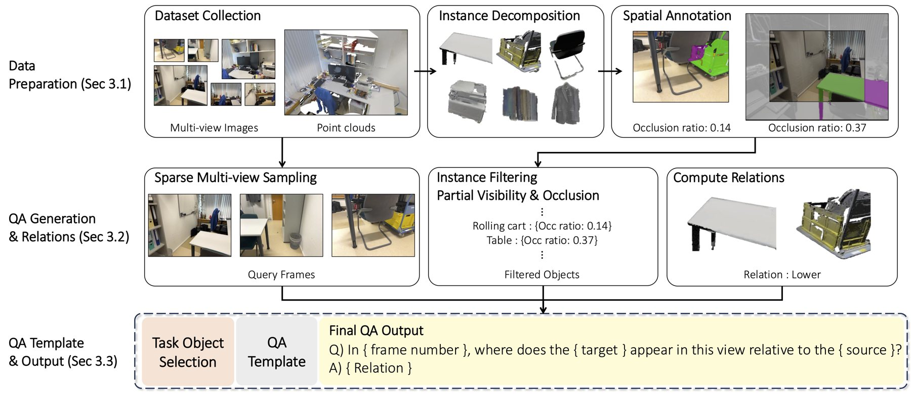
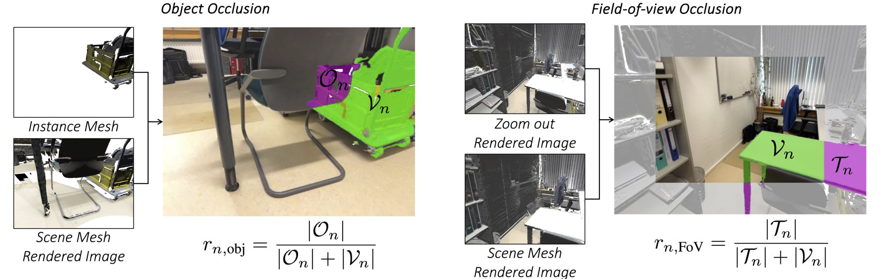
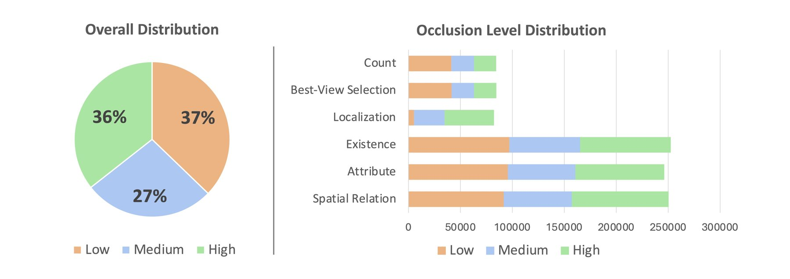
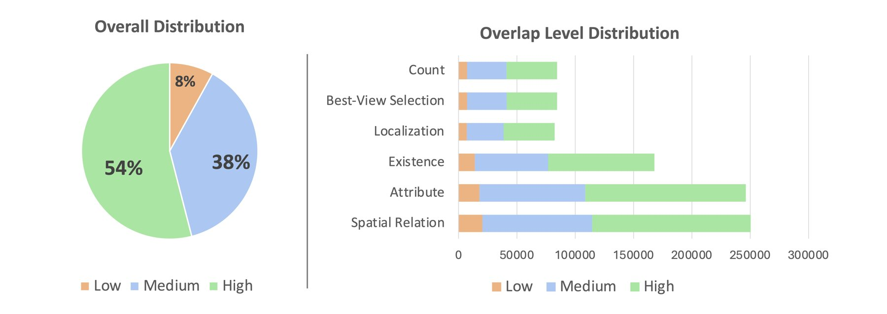
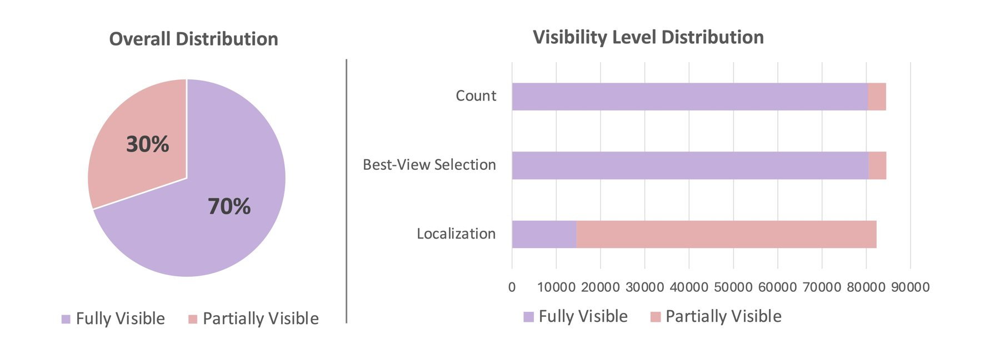
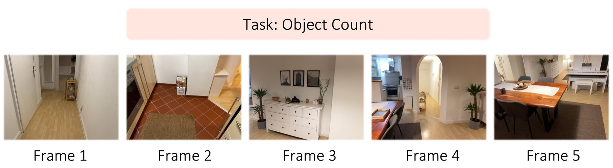
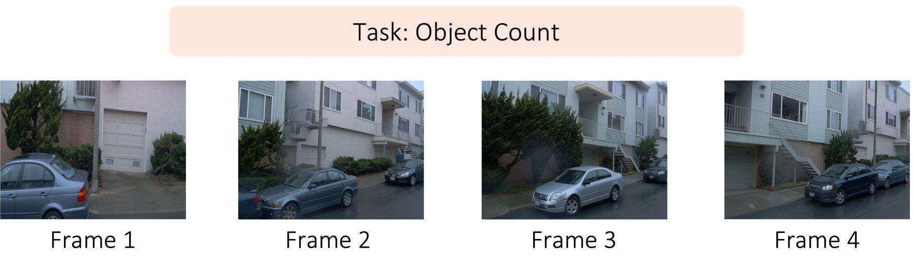

SpatialMosaic: A Multi-view VLM Dataset for Partial Visibility
A large-scale multi-view benchmark across indoor and outdoor scenes, built to evaluate spatial reasoning under partial visibility, occlusion, and low-overlap conditions, from fragmented visual observations.
1 Seoul National University · 2 University College London · 3 Kyung Hee University · 4 POSTECH
Multimodal LLMs are improving fast at 3D scene understanding, and a recent line of work learns spatial reasoning directly from multi-view images, without explicit 3D reconstruction. The cases that dominate real environments, however, stay under-explored: an object may appear in only some of the views, sit behind another object, or the views may barely overlap. SpatialMosaic targets exactly these conditions. A scalable multi-view data-generation and annotation pipeline turns multi-view images and 3D point clouds into geometrically grounded spatial-reasoning QA, producing a 2M-pair instruction-tuning dataset and SpatialMosaic-Bench, a 1M-pair benchmark spanning six tasks across both indoor and outdoor scenes. We also introduce SpatialMosaicVLM, a hybrid baseline that integrates a 3D reconstruction model as a geometry encoder inside a VLM for more robust spatial reasoning.
The problem
Existing multi-view benchmarks largely assume fully visible scenes or sequential inputs, so they do not reflect realistic conditions where observations are sparse and incomplete. In practice, a model has to reason from fragmented visual cues spread across viewpoints. Humans integrate those incomplete observations into a coherent 3D picture; current MLLMs often fail under the same conditions. SpatialMosaic isolates three under-explored constraints that frequently arise in multi-view settings:
- Partial visibility: an object is visible only in a subset of the views.
- Occlusion: an object is partially occluded within a single view.
- Low overlap: the views share minimal cross-view overlap.

Data generation pipeline
SpatialMosaic is built with a scalable multi-view pipeline. Given multi-view images and 3D point clouds, it computes occlusion-aware spatial annotations and samples sparse viewpoints to force reasoning from fragmented observations. Object instances are filtered by visibility constraints, 3D spatial relations are derived from geometric cues, and task-specific templates generate diverse, geometrically grounded QA pairs, yielding 2M training pairs plus 1M evaluation pairs in SpatialMosaic-Bench across indoor and outdoor environments.

Measuring occlusion
To quantify occlusion under realistic multi-view conditions, the pipeline introduces an occlusion ratio that captures both inter-object obstruction and field-of-view truncation. Per-instance and full-scene depth maps are rendered from the multi-view images and compared to decide whether each point is visible or occluded. From this it computes an object occlusion ratio (the share of points occluded by other objects) and a field-of-view occlusion ratio (truncation at image boundaries), giving a unified, fine-grained handle on visibility during data generation.

SpatialMosaic-Bench
SpatialMosaic-Bench holds 1M QA pairs across six task categories, weighted toward medium- and high-difficulty samples to stress multi-view spatial reasoning. The benchmark is characterized along three axes: occlusion level, overlap level, and visibility level. Switch between the axes to compare their distributions.
Data samples
Tasks span counting, best-view selection, localization, and relative-position reasoning. Indoor scenes are built from ScanNet++; outdoor scenes from Waymo.





SpatialMosaicVLM
Alongside the dataset, we introduce SpatialMosaicVLM, a new baseline for the multi-view setting. It is a hybrid framework that integrates a 3D reconstruction model as a geometry encoder within the VLM, giving the language model explicit geometric grounding for more robust spatial reasoning. Across extensive experiments, training on SpatialMosaic measurably improves spatial reasoning under challenging multi-view conditions, validating the data pipeline's ability to produce realistic, geometrically grounded QA.